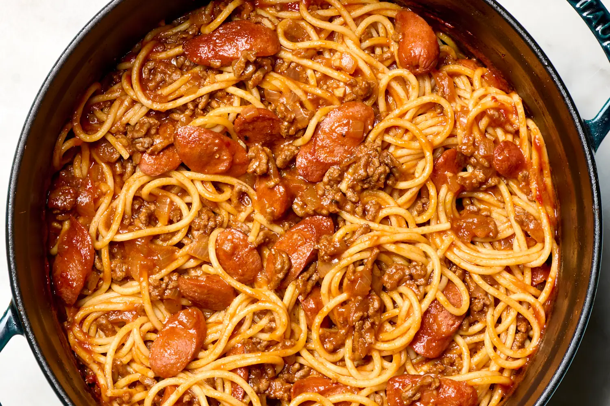

Spaghetti

Classic spaghetti recipe perfect for when you dont have a lot of time for cooking but need a lot to eat
Ingredients
- Tamoto Sauce Can
- Diced Tomatos Can
- 1/2 lb Ground Beef
- Diced Onions
- Garlic Powder
- Salt
- Pepper
- Cumin
- Oregano
- Dried Spaghetti Noodles
- Olive Oil
Steps
- Mix spices minus oregano into ground beef and let simmer in pan
- After letting simmer for a bit till browning, begin breaking up ground beef into smaller pieces
- After breaking up meat and it fully browns add tomato sauce and diced tomatos to pan
- Stir occasionally leting it simmer and add Oregano
- Add dried noodles to seperate pot of boiling water
- Take sauce pan off heat while noodles boil
- After noodles become soft strain noodles
- Mix noodles and sauce in pot
- Enjoy